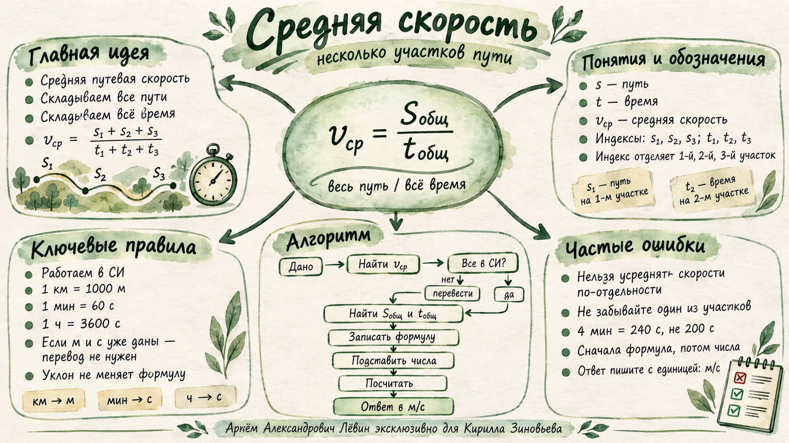

Главная формула
Если движение состоит из нескольких участков, сначала складываем все пути, затем всё время.
20.09.26 · Кирилл Зиновьев · 7 класс
Учимся аккуратно собирать данные разных участков, переводить величины в СИ и применять главное отношение: весь путь делится на всё время.
Цель занятия: по условию задачи выделить участки движения, привести данные к совместимым единицам, записать общую формулу, выполнить расчёт и оформить ответ.
Теория
Если движение состоит из нескольких участков, сначала складываем все пути, затем всё время.
и относятся к первому участку, и — ко второму.
Индекс — маленькая цифра справа внизу. Он помогает не смешать данные разных случаев.
Перед подстановкой проверяем единицы.
Если путь уже в метрах, а время в секундах, перевод не нужен.
Для средней путевой скорости важна длина каждого пройденного участка. Уклон и направление сами по себе формулу не меняют.
Если часть пути пройти обратно, длины пройденных участков всё равно складываются. Перемещение при этом зависит от направления.
Разбор примера
Среднюю путевую скорость.
Есть три отдельных участка. Каждому пути соответствует своё время, поэтому используем индексы и складываем путь со всеми путями, время — со всеми временами.
Ещё два разбора
Пути: 10 м, 15 м, 5 м. Времена: 60 с, 40 с, 50 с.
Перевод не выполняем: метры и секунды уже подходят.
Пути: 1,5 км, 2 км, 3 км. Времена: 1 ч, 50 мин, 40 мин.
После перевода: 1500 м, 2000 м, 3000 м; 3600 с, 3000 с, 2400 с.
Тренировочный блок · Путь А
Пути: 120 м, 180 м, 100 м. Времена: 40 с, 60 с, 50 с. Найдите среднюю путевую скорость.
0,9 км за 10 мин; 600 м за 5 мин; 1,5 км за 15 мин. Найдите среднюю путевую скорость в м/с.
1,8 км за 20 мин; 2,4 км за 25 мин; 3,0 км за 35 мин. Найдите среднюю путевую скорость в м/с.
Типичные ошибки
Визуальная памятка
На карте собраны формула, обозначения, перевод в СИ, алгоритм и частые ошибки.

Проверь себя
Верных ответов: 0 из 4
Готовность: 0 из 7